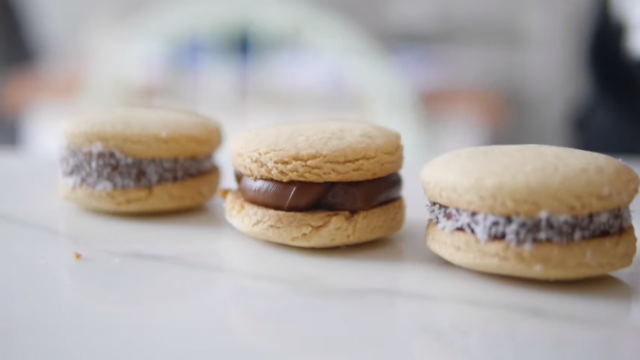

Alfajores de maicena

Go back to the recipes
Alfajores de Maicena are indulgent shortbread cookies from Latin America.
Buttery shortbread is sandwiched together with dulce de leche, then rolled in coconut.
Ingredients
- Baking powder: Gives the cookies a lighter texture.
- Egg yolk: Adding this along with a whole egg makes for a richer shortbread.
- Egg: A binding agent, go for fresh and free-range eggs.
- Vanilla Extract: Use good quality natural vanilla extract/essence, not the fake stuff.
- Cornflour: Or cornstarch, this is what gives the shortbread cookies their melt in your mouth texture.
- Caster Sugar: Also known as superfine sugar. Finer textured sugar creams into the butter easier than standard sugar.
- Butter: I use salted butter for this recipe (shock horror), as I like the subtle taste it gives against the sweet dulce de leche. You can use unsalted butter if preferred.
- Coconut: Desiccated coconut is used to roll the finished alfajores de maicena to cover the dulce de leche. You can skip this step if you don't like coconut.
- Plain Flour: Use plain, in this recipe don't substitute self-raising flour and omit the baking powder.
- Dulce de Leche or “sweet milk”
-